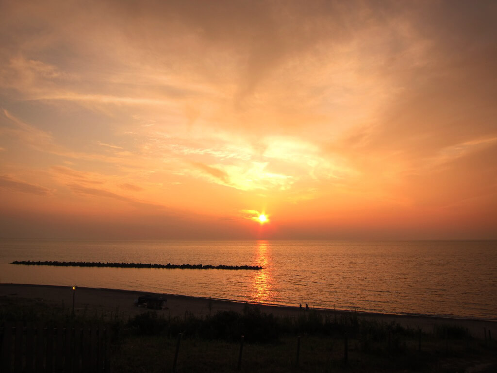
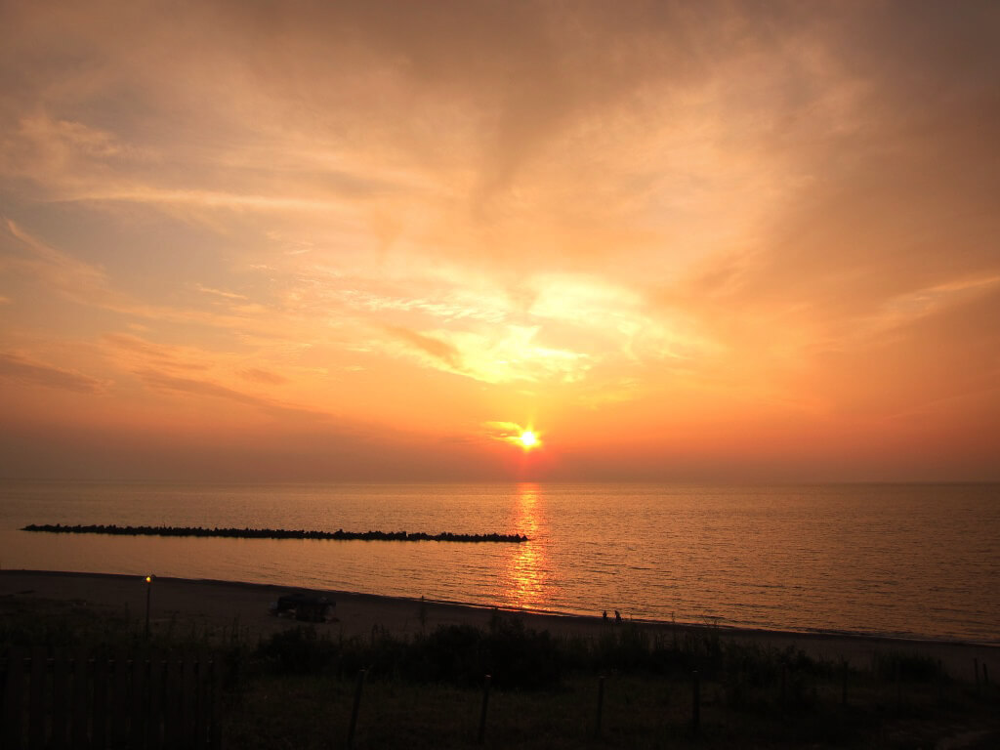
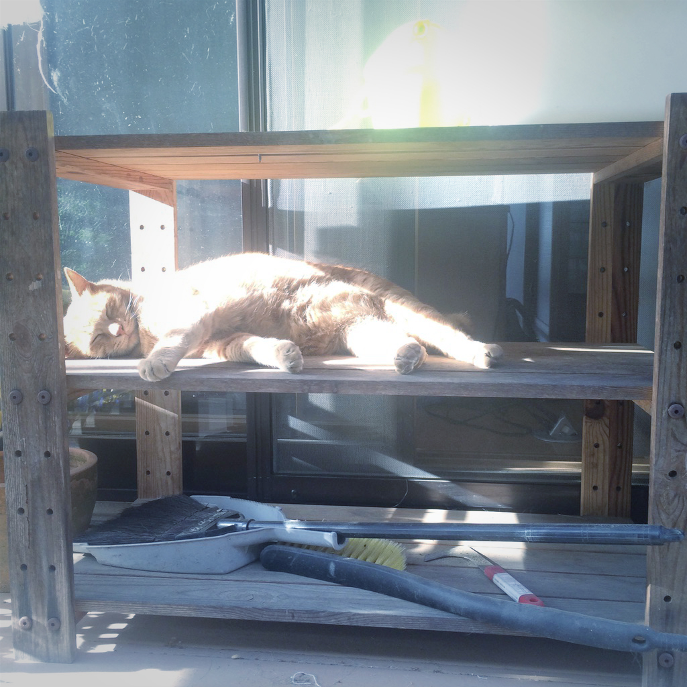
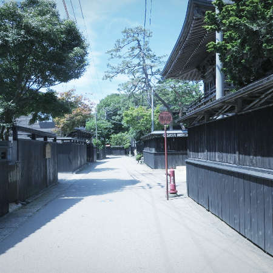
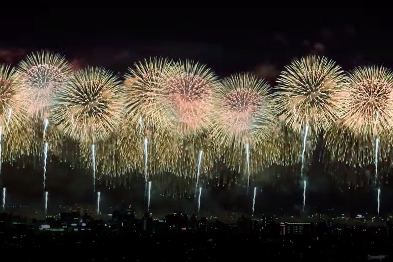
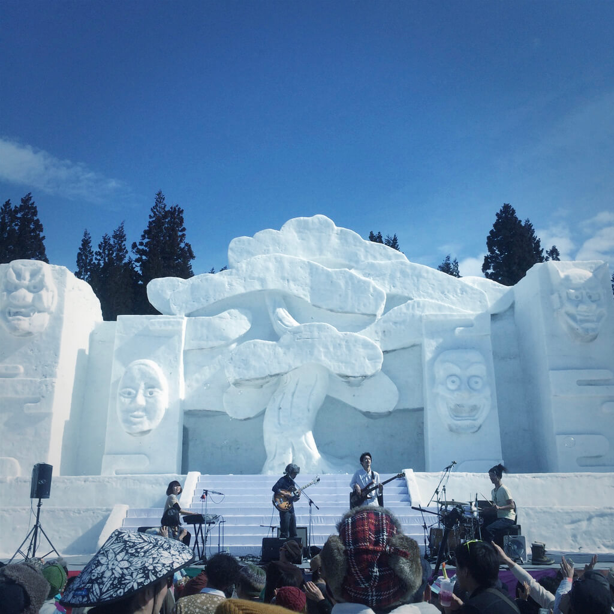
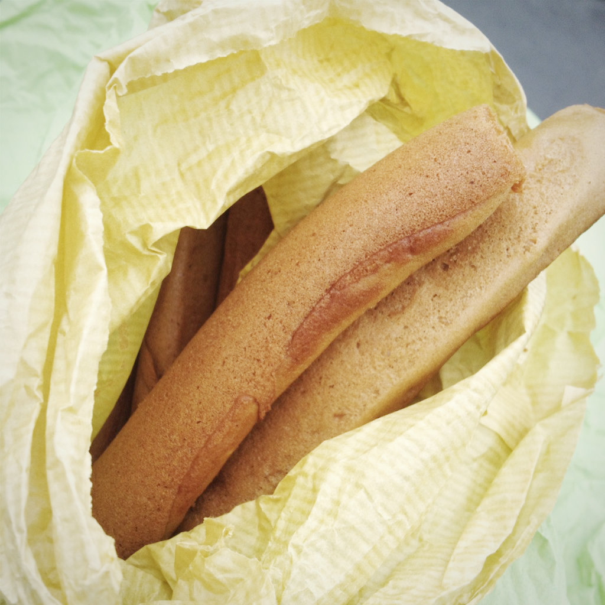
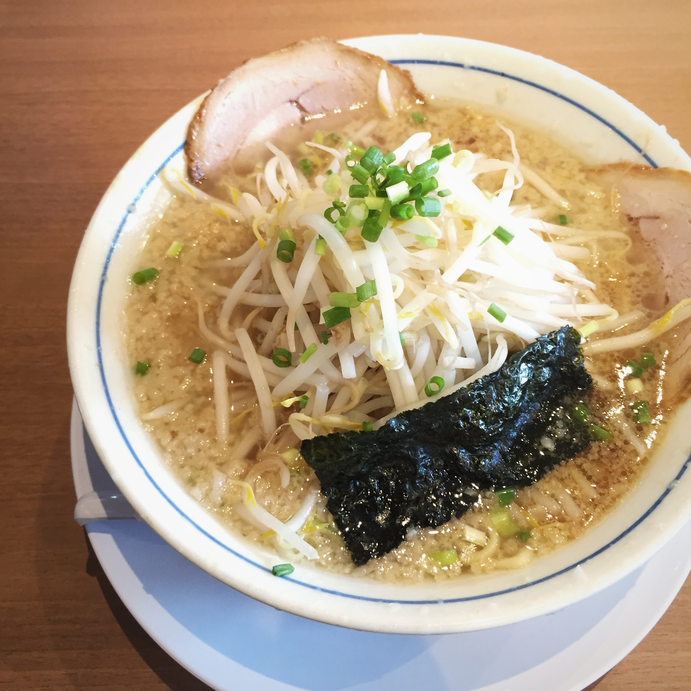
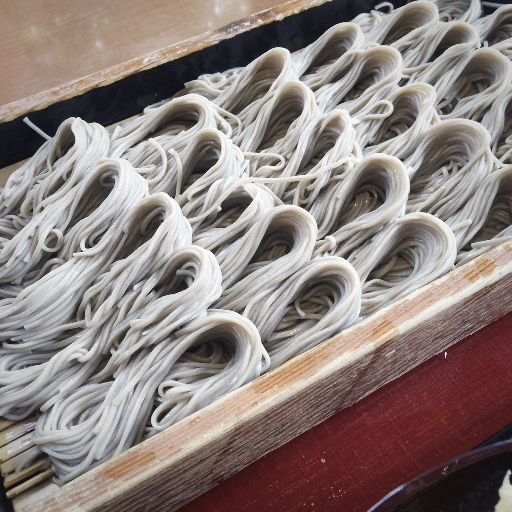

日本海に面し海山川と自然豊かな
水の都 にいがた
そんな新潟のオススメを
ご案内します
にいがた散歩
aboutにいがた
 

日本列島のほぼ中心部の日本海側に位置し、四季の変化に富み自然豊かな新潟。
言わずと知れた米処！
お米以外にも、美味しいご当地グルメがたくさんあります。
そんな新潟のオススメを紹介します。
［about me］

新潟市出身 神奈川県在住 30代 会社員（現在育休中）
18歳で上京するまで新潟市にて青春を謳歌。
その後、故郷を出て改めて新潟の魅力に気づき暇があれば帰省をし将来新潟へ家族で移住を夢見ている一児の母。
spot&event
［豪農の館（新潟市）］

昔、新潟には数々の豪農（大地主）がおり、その英華を今に伝える『豪農の館』が点在し現在は整備され一般公開されています。

私のオススメはかつての大地主 伊藤家の隆盛が見ることができる伊藤邸です。敷地面積8,800坪という広大な土地に、文化財に指定されている建物、美しい日本庭園が楽しめます。
［白鳥の湖 ヒョウ湖（新潟県阿賀野市）］

オオハクチョウやコハクチョウの飛来地で有名な湖 ひょう湖。
毎年冬になると白鳥やカモなどたくさんの鳥たちが飛来します。
鳥用の餌を購入し餌付けが出来るので、近くで白鳥を見ることもできます。（餌のほとんどはカモに食べられてしまうことが多いですが・・・）
［村上の町屋・鮭（新潟県村上市）］

新潟県の最北部に位置し、江戸時代には村上藩の城下町として栄えた村上市。いまもなお町屋造りの商店や民家が点在します。
少し歩くと黒塀など江戸時代にタイムスリップしたかのような街並みが。
ぷらぷら散策しているだけでも楽しめます！

日本で初めて鮭の養殖に成功した村上には、軒先で鮭を風干しし、発酵させてつくる「塩引き鮭」と呼ばれる名物料理があります。
［長岡花火（新潟県長岡市）］

日本三大花火の一つに数えられる長岡まつりの花火大会。毎年８月２・３日に行われます。
正三尺玉はもちろん、幅1.7㎞に及ぶ『フェニックス』は圧巻の光景です！平原綾香さんの「jupiter」の曲に合わせ打ち上げられ、首を常に横に振らないと見切れないほどの大パノラマ花火で感動ものです！泣けます！私は何度見ても泣いてしまいます！
［豪雪JAM（新潟県六日町市）］

毎年2月に行われる唯一無二の雪上音楽フェス！
雪に囲まれて聞く音楽と飲むお酒は格別です！！！
豪雪フェスという名前ですが、不思議と寒くないんです（お酒のせい？）
food
［日本海の魚］

日本海で採れた魚はやっぱり美味しい〜！
［ぽっぽ焼き］
お祭などの屋台に売られている、新潟人のソウルフード？おやつ？の『ぽっぽ焼き』
ぽっぽ焼きとは、細長い形の黒糖の入った蒸気蒸しパン。30本入りで1,000円くらいでリーズナブル！みんなでシェアして食べられます！
［ラーメン］

意外とラーメンが美味しいと有名な新潟！今や『ラーメン王国 新潟』とも呼ばれているそう！
そのため？小さい頃からラーメンが大好きな私のオススメは「三条・燕系背脂ラーメン」です。こってりかと思いきや意外とそこまで油っぽくなく女性でも食べれちゃいます！
［へぎそば］

へぎそばとは・・・
つなぎに布海苔という海藻を使った蕎麦をヘギという器に盛り付けた蕎麦。海藻を使用しているから少し色が緑っぽくほのかに海藻の風味が。ツルツルしたお蕎麦でお箸が進みます〜！
PHOTO
田園
黒塀

bird
日本海
チューリップ

鮭
信濃川クルーズ
snow

魚焼き
access
［東京から車でお越しの場合］
関越自動車道・北陸自動車道
練馬IC〜長岡JCT〜新潟西IC(297.6㎞)
所用時間：約3時間20分
［東京から新幹線でお越しの場合］
東京駅から新潟駅まで 上越新幹線で約2時間
(最速で1時間40分)